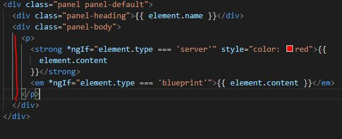

13 - Lifecycle Hooks
In all components there is ngOnInit, and it is a
lifecycle hook. And Angular supports a few lifecycle hooks.
Once a new component is instatiated Angular goes through a few phases/hooks.
-
ngOnChanges - called at the very start, and also called whenever a bound
input property changes(properties decorated with @Input)
-
ngOnInit - Called when component is initialized. Does not mean it has been
displayed or added to the DOM. But basic initialization has taken place and
properties can be accessed. ngOnInit will run after the constructor
- ngDoCheck - Runs a lot. Called during EVERY change detection run
-
ngAfterConentInit - Called after ng-Content has been projected into view
-
ngAfterContentCheck - Called every time the projected contect has been
checked
-
ngAfterViewInit - Called after the component's view (and child views) has
been initialized
-
ngAfterViewChecked - Called every time the view (and child views) have been
checked
-
ngOnDestroy - Called RIGHT BEFORE the component is about to be destroyed
Below, we take the following html from a child component that we would like to
place in between the calling of the component.
